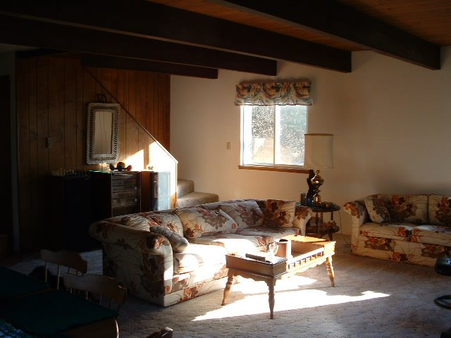

Local weather right now:
F
Our Beach House
About
Our cozy beach cabin in Ocean Shores is not fancy but it's clean and well-maintained. We go down several times a year for a nice relaxing vacation or a weekend.
It's an easy 10 minute walk to the beach which is a four-mile long unbroken stretch of sand. Clamming is a popular activity on several weekends each year, and on July 4th 10,000 people fill the beach with fireworks and bonfires. Cars are allowed to drive on certain parts of the beach. It's not very interesting for beachcombers most of the time although you can occasionally find sand dollars, and after a good storm some floats might wash up.
Deer often walk through the yard and can be seen all around the neighborhood. There is a swimming pool nearby, and we have plenty of outdoor toys and games for the yard or the beach. We also have a canoe and there is a cool lake in the middle of the town for paddling.
Building a fire in the front yard fire pit is a favorite thing to do in the evenings, or you can also have a bonfire on the beach.
We have a game room with pool, foosball, darts and air hockey in the garage, and many games in the game closet, so there is a lot to do on rainy days too.
Be sure to check out the mural in the game room by famous artist Rosie Heffernan painted (with help from her little sisters) when she was 14 years old.
Accommodation
The house sleeps a lot of people. There are beds for 9, plus two folding army cots and a queen-size blow-up mattress. There are also couches and lots of floor space.
There are two bathrooms but only one shower so short showers are a must if there are a lot of people staying. Adding a full bathroom upstairs is on our to-do list.
The fully-equipped kitchen and several tables with 12 chairs (including 4 folding chairs) mean that large groups can eat meals together. We like to have big family gatherings there.
Activities
There are a lot of fun things to do in Ocean Shores besides hang out at the beach, and we are never bored. Check out what's happening at the convention center the week you are there, or see if Galway bay has some live music. There are a variety of cute galleries and gift shops scattered throughout the town, as well as interesting restaurants and fun divey bars.
We hope your stay is enjoyable, and that you love our cute cabin as much as we do!
What to Do in Ocean Shores
-
Ocean Shores Information
-
Entertainment and Activities
- Quinalt Beach Resort - casino and entertainment
- Shores Bowl bowling alley
- Ocean Shores Cinema movie theater
- Playtime Family Fun Go Carts and rides
- Pacific Paradise Mini-golf and Arcade
- Ocean Shores Golf Course
- Several Ice Cream Parlors and Candy Stores
-
Our Favorite Places to Shop
- Fusions Gallery - local art
- Galway Bay Gift Shop - Irish and Celtic gifts
- Sharky's Gifts - the one with the big shark's head for a door
-
Best Restaurants in Town
-
Dinner
- Galway Bay - always and forever
- Bennett's Fish Shack has good seafood (try the crab cakes) and a sports bar
- HomePort Restaurant
- Emily's Oceanfront Restaurant at the casino has ocean views
-
Breakfast
- Our Place - simple with good food but not much personality
- Sunny Beach Cafe - this one is new-ish. We've only been there once but we liked it
- Ocean Beach Roasters - really good bakery that also has a wine tasting room.
- Mariah's (at the Polynesian Resort) - good Sunday brunch
-
-
Other Fun Things To Do
- Pirates Cove Pub and Grill: play Sunday night Bingo with the locals - free!
- Galway Bay has live music most weekends